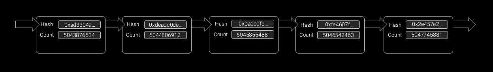
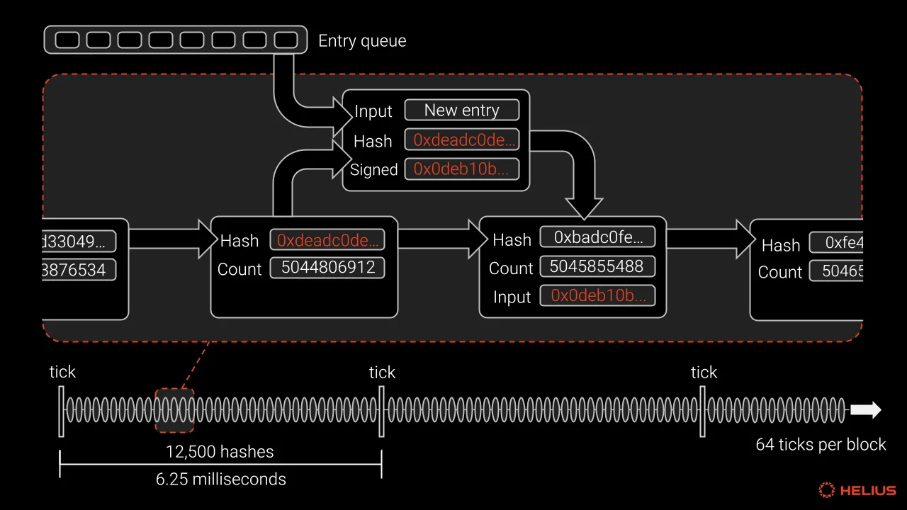
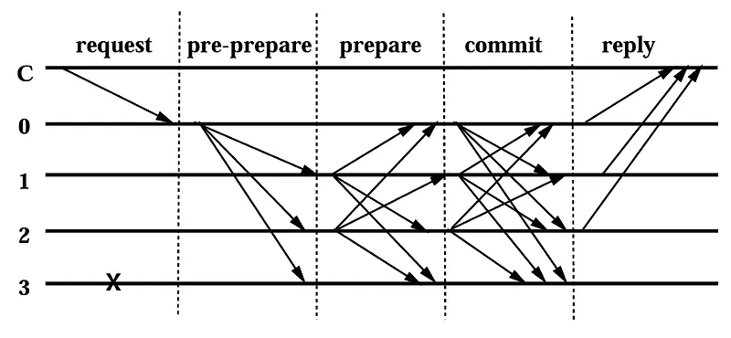

PoH의 핵심 아이디어는 **연속적 해시 체인(Sequential Hash Chain)**에 기반합니다. 이는 다음 해시를 계산할 때 반드시 이전 해시의 결과값이 입력으로 포함되는 구조로, `hash_2 = Hash(hash_1)`과 같이 끊임없이 반복됩니다. 이 연속적인 계산 과정을 통해, 특정 시점으로부터 얼마나 많은 계산이 이루어졌는지를 암호학적으로 증명할 수 있습니다.


이 연속 해시 체인에 트랜잭션 같은 이벤트가 발생한 시점을 기록하면, 나중에 누가 보더라도 해당 이벤트가 해시 체인의 어느 지점에서 발생했는지 검증할 수 있습니다. 이벤트 정보뿐만 아니라 체인상의 위치(Sequence Number)도 함께 기록되므로, 이벤트 발생 순서가 왜곡되기 어렵습니다. PoH는 이처럼 강력한 순서 증명 기능을 제공함과 동시에, 블록체인에 가상의 글로벌 시계(Timestamp) 역할을 합니다.
이를 통해 블록을 제안하는 리더는 새로운 블록의 생성 시점을 빠르게 증명하고 네트워크에 전파할 수 있습니다. 기존 PBFT나 PoS 합의에서는 블록 생성 시점을 증명하기 위해 참여자 간의 잦은 메시지 교환이 필요했지만, PoH는 이러한 추가적인 통신 과정을 대폭 줄여줍니다.
PBFT와의 비교
기존 PBFT나 PoS 합의 방식에서는 리더가 트랜잭션을 모아 블록을 만든 뒤, "이 블록은 X 시간에 만들었다"는 정보를 포함해 네트워크에 전파합니다. 그러면 다른 노드들은 여러 단계의 투표(Prepare, Pre-commit, Commit 등)를 거쳐 해당 블록이 유효한지, 리더가 시간을 속이지 않았는지 등을 서로 메시지를 주고받으며 확인합니다. 이 과정은 합의 완결성을 높이지만, 통신 오버헤드로 인해 시간이 오래 걸리고 TPS가 제한되는 단점이 있습니다.

반면, PoH는 이러한 시간 증명 문제를 다르게 해결합니다. PoH의 연속적인 해시 체인 자체가 시간이 흘렀음을 내재적으로 증명하기 때문입니다. 리더는 트랜잭션이 들어오면 그저 PoH 체인에 해당 시점을 기록하기만 하면 됩니다. 다른 노드들은 이 기록을 보고 복잡한 통신 없이도 간단한 계산만으로 블록 생성 시점을 검증할 수 있습니다. 이처럼 PoH는 글로벌 시계 역할을 수행하여 시간 증명에 대한 합의 과정을 생략시키고, 통신 오버헤드를 극적으로 줄여 솔라나가 높은 TPS를 달성하는 핵심적인 역할을 합니다.